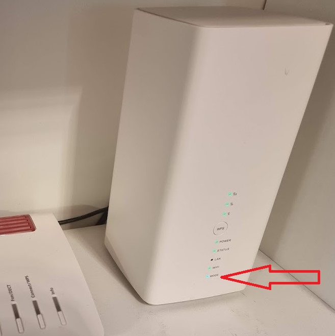

Selbstverständlich

Guten Morgen, nachdem mir vor ein paar Tagen ein Mitarbeiter von Magenta auf Facebook geraten hat mich an die Community zu wenden mache ich das. Ich habe Flex 75, wohne in einer kleinen Gemeinde im südlichen Weinviertel. Ich hatte am Anfang gute Werte die sich mittlerweile ziemlich verschlechtert haben was auch der Mitarbeiter für Überprüfenswert empfand. Mein Ping bewegt sich so zwischen 15 und 19, meine Downloadraten zwischen 18 und 27 und Upload um die 6 bis 9. Gemessen an verschiedenen Tagen und Uhrzeiten. Der letzte Test erst heute um halb drei Uhr morgens. Mein PC hängt am LAN und ich war bei jeder Messung der einzige Benutzer zu dem Zeitpunkt. Ich habe das Huawei B618s-22d Modem von Magenta. Wie gesagt, die Geschwindigkeit war am Anfang sehr gut und hat sich schleichend verschlechtert. Vielleicht hat jemand aus der Umgebung ähnliche Erfahrungen.
OK - also du hast mobiles Internet über LTE.
Hat sich am Empfang was verändert? Kannst du mal die Empfangsparameter schicken - findest du im Router Menü.
Das sind Werte wie: RSRP, SINR, RSRQ...
Der Ping ist eigentlich ganz gut - deshalb würden mich die Werte mal interessieren.
Was hattest du anfänglich für Speed?
vor 1 Stunde schrieb Christian_E:OK - also du hast mobiles Internet über LTE.
Hat sich am Empfang was verändert? Kannst du mal die Empfangsparameter schicken - findest du im Router Menü.
Das sind Werte wie: RSRP, SINR, RSRQ...
Der Ping ist eigentlich ganz gut - deshalb würden mich die Werte mal interessieren.
Was hattest du anfänglich für Speed?
Hallo und vielen Dank mal für die Unterstützung. Die Werte sind folgende:
RSRQ: -7dB
RSRP: -97dBm
SINR: 12dB
PLMN: 23203
Ich hatte zumindest Werte um die 50 beim Download. Gelegentlich so gar noch höher. Deshalb eben meine Verwunderung darüber das ich jetzt nur noch im Wertebereich von 20 liege. Hin und wieder auch darüber aber das ist die Ausnahme in der Zwischenzeit. Und wie erwähnt, ich habe diese Werte auch zu Zeiten in denen hier heraussen die Leute im Bett liegen.
MfG Reinhart
Hmmm
Also die Empfangswerte sind in Ordnung. RSRP könnte niedriger sein - evtl. den Router umstellen und schauen. Je niedriger bei RSRP desto besser. SINR ist gut - da gilt, je höher desto besser.
Aber der Huawei B618 kann doch Frequenzen bündeln.
Leider ist HUACtrl nicht mehr kostenlos, könnte man aber als APK downloaden und auf einem Android Handy installieren.
Da geht dann einiges.
Ich würde mal gerne wissen, in welchem Band du drinnen bist. Könnte das B20 sein - das ist gerne überlastet.
B1 oder B3 wären eine gute Alternative.
Mit HUACtrl könnte man ein anderes Band fixieren oder 2 und mehr alternative Bänder sogar bündeln.
HuaCtrl:
https://huactrl.de.aptoide.com/app
oder hier:
https://apk.support/app-de/pl.thecoder.huactrlpro
vor 58 Minuten schrieb Christian_E:Hmmm
Also die Empfangswerte sind in Ordnung. RSRP könnte niedriger sein - evtl. den Router umstellen und schauen. Je niedriger bei RSRP desto besser. SINR ist gut - da gilt, je höher desto besser.
Aber der Huawei B618 kann doch Frequenzen bündeln.
Leider ist HUACtrl nicht mehr kostenlos, könnte man aber als APK downloaden und auf einem Android Handy installieren.
Da geht dann einiges.
Ich würde mal gerne wissen, in welchem Band du drinnen bist. Könnte das B20 sein - das ist gerne überlastet.
B1 oder B3 wären eine gute Alternative.
Mit HUACtrl könnte man ein anderes Band fixieren oder 2 und mehr alternative Bänder sogar bündeln.
HuaCtrl:
https://huactrl.de.aptoide.com/app
oder hier:
https://apk.support/app-de/pl.thecoder.huactrlpro
Vielen Dank für die App. Leider scheitere ich bereits beim Betreiben der App. Egal welche Daten ich verwende die App zeigt mir keinerlei Signal an. Die Anleitung der App habe ich gelesen und mich daran gehalten aber irgendetwas mache ich trotzdem falsch. Welche IP Adresse nehme ich jetzt genau? Die, die am Router steht oder die, die mir unter http://192.168.8.1/html/home.html angezeigt wird nach dem einloggen? Beim User gebe ich Admin ein oder leer lassen? Bei mir wird kein User angegeben beim log in sondern nur das Passwort. Und Passwort ist das welches ich bei der Anmeldung auf der Webseite verwende oder das welches am Router angeben ist? Und ist es normal das die IP wechselt? Vorher war meine Endnummer 106 und jetzt 176.
Du brauchst die IP, mit der du den Router per Browser erreichst. Also 192.168.8.1
User müsste admin sein und Passwort das, welches du auch bei der Webanmeldung benötigst.
Ja die IP wechsel bei deinem Rechner deshalb, weil du vom Router per DHCP eine bekommst. Aber das sollte kein Thema sein.
Sonst bitte mach mal einen Screenshot.
Jetzt noch eine Frage an die Community - @all
HUACtrl sollte doch mit dem B618 funktionieren? Ich hab das im Kopf, dass das funktioniert.
vor 36 Minuten schrieb reinhart669:Beim User gebe ich Admin ein oder leer lassen? Bei mir wird kein User angegeben beim log in sondern nur das Passwort. Und Passwort ist das welches ich bei der Anmeldung auf der Webseite verwende oder das welches am Router angeben ist? Und ist es normal das die IP wechselt? Vorher war meine Endnummer 106 und jetzt 176.
Admin kleingeschrieben und das Passwort dieses du im Webinterface des B618 vergeben hast. Bitte beachte, dass nicht alle LTE Bänder verfügbar sein können. Wohnst du in einem Gebiet wo es nur B20(800 MHz) gibt hilft dir die HUA Ctrl App nicht wirklich viel.Solltest du ein Samsung Smartphone besitzen kannst du die empfangbaren LTE Bänder mit der Tastenkombination *#0011# abfragen, vorausgesetzt es ist mit dem T-Mobile (Magenta) Netz verbunden,
Bearbeitet von Rexalius2000Danke @Rexalius2000
Dann sollten wir das hinbekommen. Und ich glaub auch, dass wir mit diesem Tool noch was raus holen könnten aber zuvor brauchen wir noch Daten.
vor 26 Minuten schrieb Christian_E:Du brauchst die IP, mit der du den Router per Browser erreichst. Also 192.168.8.1
User müsste admin sein und Passwort das, welches du auch bei der Webanmeldung benötigst.
Ja die IP wechsel bei deinem Rechner deshalb, weil du vom Router per DHCP eine bekommst. Aber das sollte kein Thema sein.
Sonst bitte mach mal einen Screenshot.
Super. Bin drin. Funktioniert also endlich. Danke. Habe Screenshot erstellt welche Bänder automatisch ausgewählt wurden. Also was mache ich jetzt und wo?
Also der Empfang ist sehr schlecht mit deinem Smartphone wie uns dein Screenshot verrät. Bitte frage mal die Technologien ab diese du an deinem Standort empfängst. Ideal wäre es wenn die Abfrage LTE Advanced dir anzeigt. Magenta Netz Check
Ein Beispiel:

vor 13 Minuten schrieb reinhart669:
Wähle jeweils mal einzeln B1, B3, B7, B8 und B20 aus und klicke dazwischen auf Apply und schaue, ob der Router eine Verbindung herstellen kann. Damit kann man testen welche Bänder bei dir verfügbar sind. Der B618 kann maximal zwei Bänder gleichzeitig nutzen, aber nicht jede Kombination ist möglich. Je nachdem was verfügbar ist, kann man dann die bestmögliche Kombination einstellen.
Bearbeitet von NTMGenau! Achte dabei auch auf die "Mode" Led, wird diese Rot ist keine Verbindnung möglich.

Genau.
RSRP sollte nicht weit über 100db rauf gehen, SINR sollte auf keinen Fall ins negative gehen.
Das sind so die Richtwerte, dann kannst du prüfen, ob das Band Sinn macht.
B20 vergiß mal... Teste B1 und B3 und schreib mal hier rein, wie der Empfang dann ist und wie die Geschwindigkeit aussieht.
Wenn B1 und B3 bei dir klappen, dann klicke mal in der Auswahl nur die beiden an und mach einen Speedtest.
vor einer Stunde schrieb Christian_E:Genau.
RSRP sollte nicht weit über 100db rauf gehen, SINR sollte auf keinen Fall ins negative gehen.
Das sind so die Richtwerte, dann kannst du prüfen, ob das Band Sinn macht.
B20 vergiß mal... Teste B1 und B3 und schreib mal hier rein, wie der Empfang dann ist und wie die Geschwindigkeit aussieht.
Wenn B1 und B3 bei dir klappen, dann klicke mal in der Auswahl nur die beiden an und mach einen Speedtest.
Download Rate im einstelligen Bereich und B1 und B3 ausgewählt.
vor 1 Stunde schrieb NTM:Wähle jeweils mal einzeln B1, B3, B7, B8 und B20 aus und klicke dazwischen auf Apply und schaue, ob der Router eine Verbindung herstellen kann. Damit kann man testen welche Bänder bei dir verfügbar sind. Der B618 kann maximal zwei Bänder gleichzeitig nutzen, aber nicht jede Kombination ist möglich. Je nachdem was verfügbar ist, kann man dann die bestmögliche Kombination einstellen.
B7 geht als einziges nicht. B1 und B3 Download Rate im einstelligen Bereich.
vor einer Stunde schrieb Christian_E:Genau.
RSRP sollte nicht weit über 100db rauf gehen, SINR sollte auf keinen Fall ins negative gehen.
Das sind so die Richtwerte, dann kannst du prüfen, ob das Band Sinn macht.
B20 vergiß mal... Teste B1 und B3 und schreib mal hier rein, wie der Empfang dann ist und wie die Geschwindigkeit aussieht.
Wenn B1 und B3 bei dir klappen, dann klicke mal in der Auswahl nur die beiden an und mach einen Speedtest.
Test jetzt wiederholt und jetzt einen DL von 34, Ping 15
Schau mal ins Webinterface deines B618 (192.168.8.1) und starte einen Download. Wird ein + neben LTE oder 4G auf der Startseite angezeigt ?
vor 3 Minuten schrieb reinhart669:
Test jetzt wiederholt und eine DL vom 34 bei Ping 15
vor 1 Stunde schrieb Rexalius2000:Also der Empfang ist sehr schlecht mit deinem Smartphone wie uns dein Screenshot verrät. Bitte frage mal die Technologien ab diese du an deinem Standort empfängst. Ideal wäre es wenn die Abfrage LTE Advanced dir anzeigt. Magenta Netz Check
Ein Beispiel:
Bei mir ist LTE Plus Empfang möglich.
vor 8 Minuten schrieb Rexalius2000:Schau mal ins Webinterface deines B618 (192.168.8.1) und starte einen Download. Wird ein + neben LTE oder 4G auf der Startseite angezeigt ?
Nein, bei mir wird kein Plus angezeigt
Bearbeitet von reinhart669
Alles der Reihe nach.
Bitte wähl mal die einzelnen Bänder aus und poste nur RSRP und SINR.
Dann schauen wir, was bei dir überhaupt geht.
Das Webinterface von HUACtrl ist etwas älter, da sehe ich das nicht raus.
Auch nicht bei einem aktiven Download ? Wenn Nein,ist bei dir nur 1 LTE Frequnzband leider verfügbar.
Ja wart mal Rexalius.
Wir müssen uns da etwas koordinieren

Wir müssen bei ihm mal wissen, was überhaupt geht, deshalb mein letztes Posting.
vor 1 Minute schrieb reinhart669:Test jetzt wiederholt und eine DL vom 34 bei Ping 15
Bei mir ist LTE Plus Empfang möglich.
LTE-Advanced bedeutet, dass zumindest zwei Bänder verfügbar sind. Bei dir sind sogar vier Bänder verfügbar. Solange derselbe Mast diese aussendet, kann der B618 zwei davon bündeln. Wenn die Bündelung erfolgreich ist, wird 4G+ oder LTE+ statt 4G oder LTE angezeigt, wobei die Bündelung oft nur erfolgt, wenn Daten geladen werden, um Energie zu sparen.
Die Kombinationen, welche für dich relevant sind und der B618 kann ist:
B1+B3 (insgesamt 35 MHz)
B1+B20 (insgesamt 25 MHz)
B3+B20 (insgesamt 30 MHz)
B8 sollte der B618 mit nichts anderem kombinieren können. Im B8 gibt es auch nur unter 40Mbit/s Bandbreite insgesamt.
Cellmaper könnte eventuell uns mehr dazu sagen

Guten Morgen, nachdem mir vor ein paar Tagen ein Mitarbeiter von Magenta auf Facebook geraten hat mich an die Community zu wenden mache ich das. Ich habe Flex 75, wohne in einer kleinen Gemeinde im südlichen Weinviertel. Ich hatte am Anfang gute Werte die sich mittlerweile ziemlich verschlechtert haben was auch der Mitarbeiter für Überprüfenswert empfand. Mein Ping bewegt sich so zwischen 15 und 19, meine Downloadraten zwischen 18 und 27 und Upload um die 6 bis 9. Gemessen an verschiedenen Tagen und Uhrzeiten. Der letzte Test erst heute um halb drei Uhr morgens. Mein PC hängt am LAN und ich war bei jeder Messung der einzige Benutzer zu dem Zeitpunkt. Ich habe das Huawei B618s-22d Modem von Magenta. Wie gesagt, die Geschwindigkeit war am Anfang sehr gut und hat sich schleichend verschlechtert. Vielleicht hat jemand aus der Umgebung ähnliche Erfahrungen.
@NTM wo siehst du das 4 Bänder verfügbar sind ?
vor 1 Minute schrieb Rexalius2000:@NTM wo siehst du das 4 Bänder verfügbar sind ?
vor 17 Minuten schrieb reinhart669:B7 geht als einziges nicht.
Ja aber ohne Werte bringt uns das nicht weiter

vor 13 Minuten schrieb Christian_E:Alles der Reihe nach.
Bitte wähl mal die einzelnen Bänder aus und poste nur RSRP und SINR.
Dann schauen wir, was bei dir überhaupt geht.
Das Webinterface von HUACtrl ist etwas älter, da sehe ich das nicht raus.
B1 RSRP -105, SINR 3
B2 RSRP -100, SINR 2
B8 RSRP -91, SINR 13
B20 RSRP -90, SINR 6
Bearbeitet von reinhart669
Stimmt,erfahrungsgemäß kann ich an Orten wo nur B20 verfügbar ist über CTRL problemlos B20+B3 bündeln nur wählt sich der B618 nicht in das Band 3 ein. Erkennbar dann im Webinterface
vor 6 Minuten schrieb reinhart669:B1 RSRP -105, SINR 3
B2 RSRP -100, SINR 2
B8 RSRP -91, SINR 13
B20 RSRP -90, SINR 6
OK sehr gut! Danke

B1 kannst du so mal (am aktuellen Platz vom Router) vergessen, B2 ist leider auch eher dürftig B8 besser und B20 auch aber B20 ist wiederum überlastet.
Also - das gute ist, du empfängst die wichtigen Bänder B1 und B3 aber das schlecht ist - nur recht schwach.
2 Möglichkeiten:
1) du stellt mal den Router raus auf die Fensterbank und prüfst nochmal die Werte. Ist B1 oder B3 besser, dann gleich auch einen Speedtest.
Bzw. wechsle den Routerplatz mal im Raum, auch drehen wäre gut.
2) Aufwendiger!
Externe Antenne und du wirst mit Sicherheit deutlich bessere Ergebnisse bekommen.
Aber das ist halt mehr Aufwand.
Wenn möglich wieder die List mit den Bändern vorher und nachher + Speedtest.
vor 3 Minuten schrieb Christian_E:1) du stellt mal den Router raus auf die Fensterbank und prüfst nochmal die Werte. Ist B1 oder B3 besser, dann gleich auch einen Speedtest.
Bzw. wechsle den Routerplatz mal im Raum, auch drehen wäre gut.
Sollte es ein Haus sein, bzw. eine Wohnung mit Fenstern auf mehr als einer Gebäudeseite, dann am besten den Raum mal komplett wechseln. Vielleicht steht der Router nämlich auf der vom nächsten Sendemasten abgewandten Gebäudeseite, was den Empfang auch negativ beeinträchtigen kann.
vor 9 Minuten schrieb Christian_E:OK sehr gut! Danke
")
B1 kannst du so mal (am aktuellen Platz vom Router) vergessen, B2 ist leider auch eher dürftig B8 besser und B20 auch aber B20 ist wiederum überlastet.
Also - das gute ist, du empfängst die wichtigen Bänder B1 und B3 aber das schlecht ist - nur recht schwach.
2 Möglichkeiten:
1) du stellt mal den Router raus auf die Fensterbank und prüfst nochmal die Werte. Ist B1 oder B3 besser, dann gleich auch einen Speedtest.
Bzw. wechsle den Routerplatz mal im Raum, auch drehen wäre gut.
2) Aufwendiger!
Externe Antenne und du wirst mit Sicherheit deutlich bessere Ergebnisse bekommen.
Aber das ist halt mehr Aufwand.
Wenn ich B1 und B3 kombiniere zeigt mir die App zwar ein oranges Signal aber ich bekomme ein LTE+ angezeigt und Speedtest zeigt DL von 62.
Bearbeitet von reinhart669
Ja aber da sind wir doch eh schon auf der richtigen Spur oder?

DL von 62 ist besser und da geht sicher noch was.
Aber @NTM hat recht. Bitte mal auch andere Seiten testen.
vor 1 Minute schrieb reinhart669:Wenn ich B1 und B3 kombiniere zeigt mir die App zwar ein oranges Signal aber ich bekomme ein LTE+ angezeigt und Speedtest zeigt DL von 62.
Super das geht als schon mal in die richtige Richtung. Wenn du noch eine andere Stelle mit besserem Signal findest, könntest du die 75 Mbit/s deines Vertrages auch wirklich bekommen (außer vielleicht in der Primetime).
vor 4 Minuten schrieb reinhart669:Wenn ich B1 und B3 kombiniere zeigt mir die App zwar ein oranges Signal aber ich bekomme ein LTE+ angezeigt und Speedtest zeigt DL von 62.
Hast du die Position vom Modem verändert?
Gerade eben schrieb Christian_E:Hast du die Position vom Modem verändert?
Nein. Modem steht am einzigen Fensterplatz der für alle zugänglich ist. Ich habe externe Antennen für innen die ganze Zeit montiert. Die kleben an der Scheibe vom Fenster. Mein PC steht im Keller und ich leite das Internet für mich und für den Rest der Familie mittels Power Line Adapter weiter. Nachts drehen wir das Modem ab daher steht es im Wohnzimmer an der einzigen Stelle die Nahe genug am Fenster ist.
Ja gut.
Und die Antennen bringst nicht raus oder?
Aber egal - der DL ist ja schon deutlich besser. Wie ist der Upload?
Achja noch was. HUA Ctrl als App gibt es in einer neueren Version im Appstore. Allerdings um 9€.
Wennst mehr spielen möchtest, würde ich dir die Invest der 9€ raten.
Muss aber nicht unbedingt sein - nur als Info, falls du noch mehr spielen möchtest

vor 5 Minuten schrieb Christian_E:Ja gut.
Und die Antennen bringt nicht raus oder?
Aber egal - der DL ist ja schon deutlich besser. Wie ist der Upload?
Der Unterschied mit Antennen an und aus ist minimal. Ich habe sie damals gekauft um den Empfang zu verbessern. Up ist bei ungefähr 6
Passt das nun für dich? Oder sollen wir weiter forschen?
vor 5 Minuten schrieb Christian_E:Achja noch was. HUA Ctrl als App gibt es in einer neueren Version im Appstore. Allerdings um 9€.
Wennst mehr spielen möchtest, würde ich dir die Invest der 9€ raten.
Muss aber nicht unbedingt sein - nur als Info, falls du noch mehr spielen möchtest")
Ich habe mir die App im Appstore von Anfang an besorgt. Weil wenn ich schon das Maximum erreichen will dann auch das Beste verwenden.
Gute Einstellung.

Passt - dann hoffe ich, es passt mal für dich.
vor 4 Minuten schrieb Christian_E:Gute Einstellung.
Passt - dann hoffe ich, es passt mal für dich.
Leider ist ein Umstellen eben nicht möglich. Router im Arbeitszimmer von Frau ist nicht erwünscht 😜
Router in der Küche, was die Gegensätzliche Richtung wäre, ist auch nicht möglich weil dann steht das Ding auf der Arbeitsfläche herum und behindert beim Kochen und mehr Möglichkeiten habe ich nicht. Aber trotzdem danke für die Hilfe.
Gern geschehen!

vor 9 Minuten schrieb Christian_E:Gute Einstellung.
Passt - dann hoffe ich, es passt mal für dich.
Ich schätze im Moment kann ich nicht mehr tun und die Werte bei DL sind auf jeden Fall bei weitem besser als zuvor. Ich habe jetzt eine ungefähre Ahnung was ich machen kann wenn es Probleme gibt oder ich doch einen anderen Platz für das Gerät finde. Und sollte ich wirklich wieder mal Hilfe brauchen weis ich ja jetzt an wenn ich mich wenden kann. Ich sage mal vielen herzlichen Danke an alle für die tolle Unterstützung.
Wir alle helfen hier gerne in der Community.
Super, dass wir helfen konnten und das Ergebnis dafür spricht.
{kind=link}
{kind=link}
{kind=link}
{kind=link}
{kind=link}